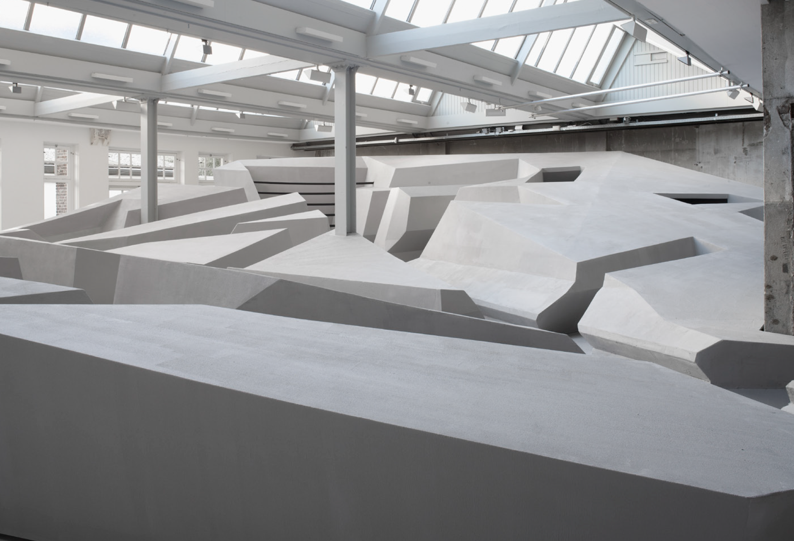
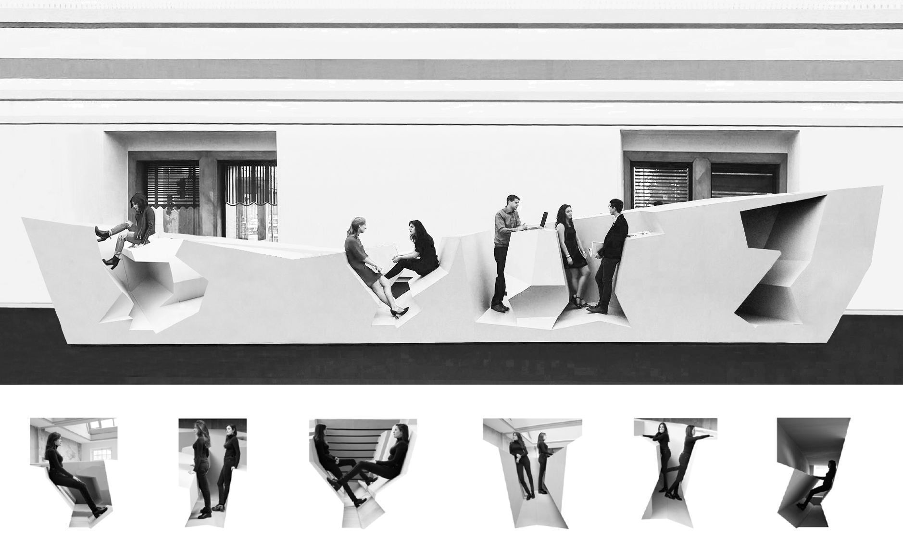
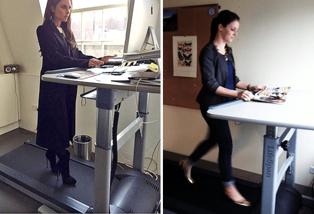

Chapter 2 Seat
On a Cultural level

Since mankind has lived in a world surrounded by chairs, tons of different shape of chairs have designed. Among others, ergonomic designs of chairs are one of alternative plans for sedentary life. Ergonomic chairs are designed with the intention of providing maximum comfort and necessary support to the human body while sitting for long periods of time. However, getting out of chairs could be the answers. “Ergonomics” has become increasingly important since its introduction in the mid-19th century and current ergonomic advise is that if we work 20 minutes at work, we should stretch for 1-2 minutes, and take a 5-10 minute break every 50 minutes. 8Cregan-Reid, Vybarr. Primate Change: How the World We Made Is Remaking Us. Cassell, an Imprint of Octopus Publishing Group, 2018. Based on up-to-date results and researches about warning of sitting, new ways of sitting has emerged which is non-chair.
“The End of Sitting” proposes a new working environment: a silver-gray rock landscape featuring excavated spots of varying sizes and heights to support bodies in a range of positions. Most pathways are sloped to provide ideal footing while leaning. The installation offers multiple options for workers to stand, lean, hang, and even recline in private or collaborative niches for optimal concentration. The structure of the work landscape offers a range of benefits: niches for concentration, areas for collaborative work, and settings that enable informal interaction. The ultimate aim of this landscape is to stimulate employees to change their postures throughout the day, while the rigidness of the rock ensures that their comfort is only short-lived. Paradoxically, this sense of discomfort ensures a high level of activity over time. 9Rietveld Landscape, RAAAF. “The End of Sitting - Projects.” RAAAF, 27 Feb. 2023, https://www.raaaf.nl/en/projects/927_the_end_of_sitting.
Victoria Beckham’s tweet about a treadmill desk leaded explosive reactions at that time in 2014 but it is not unusual anymore today, especially standing desks. It is becoming increasingly apparent that standing desks can be beneficial to one's health, with a range of studies showing a reduction in lower back pain, improved posture, increased energy levels and a lower risk of weight gain and obesity. Adjustable and fixed standing desks are becoming increasingly popular. The emergence of a non-conventional workspace has revolutionized the traditional structure of the working environment.
The presence of chairs has become ubiquitous globally, sometimes deliberately promoted by Western rule or influence, but more often spontaneously adopted with modernization. This transformation has been one of the most significant and seemingly irreversible in the history of material culture. 10Tenner, Edward. “How the Chair Conquered the World.” The Wilson Quarterly (1976-), vol. 21, no. 2, 1997, pp. 64–70. JSTOR, http://www.jstor.org/stable/40259449. Accessed 26 Feb. 2023. For countries where didn’t have chair-seating culture, it was a radical change especially in household.
It has been less than 60 years since chair-sitting started in Korean household. It does not imply that chair culture did not exist in Korean history, but since the 15th century, when the heating system known as "Ondol(온돌)” was widely used, from the 15th century to the late 15th century, Goryeo(고려) Dynasty Korea started floor-sitting lifestyles. Big change to chair-sitting could have been sudden to Koreans after almost 200 years of floor-sitting of living. From 1950s the modernization started with significant economic growth in South Korea and numerous western cultures especially American culture was embraced for example food, pop culture, furniture etc. “Maru” lifestyle which eating, playing, sleeping happen at one place disappeared but by taking many furniture inclusive of sofas, dining-tables, people started to sit on chairs in the household. At this moment, hybrid-sitting with floor and chair has settled in but chair-seating remains as a symbol of westernization and modernization.
In Japan as well, there was a big change of lifestyle from floor-sitting to chair in the procedure of modernization earlier than in Korea. For western countries, adapting chair-sitting is more advanced culture. An article of New York Times titled “In a Painful Situation, Japanese Choose Chairs” explained that:
“Sitting on the floor has long been part of Japan’s way of life. In traditional homes people eat and sleep on straw floor mats known as tatami. But in carrying out its economic miracle, Japan not only rose from the ashes of World War II, but it also literally picked itself off the floor. Western-style housing and furniture have become more widespread, particularly in the big cities. As a result, many people nowadays either cannot sit on the floor, or prefer not to. So, Japan is adapting.” 11Pollack, Andrew. Tokyo Journal; In a Painful Situation, Japanese Choose Chairs, 25 Aug. 1995.
Furthermore, since the 1980s, the use of monobloc chairs has been quite widespread in Africa due to their affordability and toughness. As time went on, these chairs have become a common fixture in African culture and can be seen in a multitude of locations, ranging from street vendors and eateries to people's residences and workplaces.
Chairs have been irreplaceable in western culture. They spread in part due to the fact that technological systems were built around them before alternatives were accessible. 12Tenner, Edward. “How the Chair Conquered the World.” The Wilson Quarterly (1976-), vol. 21, no. 2, 1997, pp. 64–70. JSTOR, http://www.jstor.org/stable/40259449. Accessed 26 Feb. 2023. On the other hand, there has been other way of sitting without chairs around Asian and African countries. An anthropologist, Gordon Hewes, documented the vast array of recognized postures—over a thousand consistent postures—that humans adopt all over the world. He also reminds us that almost everything, including how we hold our bodies, must be understood within the framework of its cultural context. Floor sittings have been observed across cultures and nations.
Except for European and European-derived cultures, squatting with the soles of the feet flat and the buttocks either actually resting on the ground or floor, or only an inch or two above it, has a very wide distribution. For Indonesians, squatting is a very natural and comfortable position, and they can remain in such a position feeling totally relaxed for a long time. Groups of people and children can be seen smoking, chatting, and squatting by the roadside. For most Indonesians, this is the most natural and comfortable way to use the toilet, which explains the prevalence of squat toilets even in some luxurious shopping malls and office buildings. 13 In Vietnam, there’s unique culture with use of tiny plastic chair with short legs and usually bright blue or red coloured.* It’s easy to encounter a lot of people on the street sitting in the chairs but having almost squatting posture at the same time. Deep squatting posture comes along with the short plastic chairs naturally.
Sitting with the legs crossed, in what is loosely called in English “tailor fashion”, actually breaks down very widespread, although it is probably not a human universal trait. The religious diffusion of some of the cross-legged postures from India with Hinduism and Buddhism seems to be unquestionable. Sitting cross-legged so that the sole of one foot lies on the opposite thigh occurs in Samoa, Japan, Bali, Cambodia, Thailand, and in India-where it is one of the Yoga asanas.
Turkey has a traditional furniture named the “divan" from which are deep, wide, and firm enough to allow this type of sitting in household. In Ottoman times, the divan was an essential piece of furniture in both public and private settings. It was used as a meeting location for the Ottoman council of ministers, in government settings. The council was in charge of making important decisions concerning the empire's administration, and meetings were held in a specially designated room known as the "Divan Chamber." It was commonly used in wealthy Ottoman households' homes, as well as government buildings and other public places. The carpet has important role of floor-sitting in Western Asia including Turkey, Iran, and Egypt. In mosques, they kneel and recline on the plush carpeting that covers the floor. Muslim religious rituals are unusually sensitive to bodily sensations. Carpets do more than just protect the knees; all visitors to a mosque (or house) remove their shoes, purportedly to avoid bringing dirt onto the carpets where people will place their hands and faces.

There is evidence that females in large parts of Negro Africa, Mexico, and certain regions of Indonesia are more likely to adopt and use these postures than males. These postures are fairly prevalent. The typical sitting position for a Japanese person on tatami is something that could be characterized as a "deep kneel," with the feet tucked under the buttocks and the dorsal surfaces facing downward. It is customary for Muslims to pray in this position, and it may have been connected with supplicating in more advanced civilizations across Eurasia, if not further afield.
Whether on the floor, during rest ceremonies, or in a chair, posture is regulated symbolically all over the globe. Hewes stressed that the scientific lack of cross-cultural data by non-anthropologists, which contributes to postural behavior's scientific shortcomings by documenting the postural variations around the world culturally determined. 14Hewes, Gordon W. “World Distribution of Certain Postural Habits.” American Anthropologist, vol. 57, no. 2, 1955, pp. 231–44. JSTOR, http://www.jstor.org/stable/666393. Accessed 27 Feb. 2023. Our way of sitting is the most direct representation of the cultural contexts of various people and indication which help to understand their culture and history.